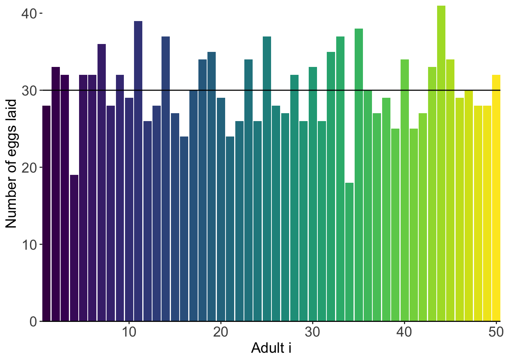
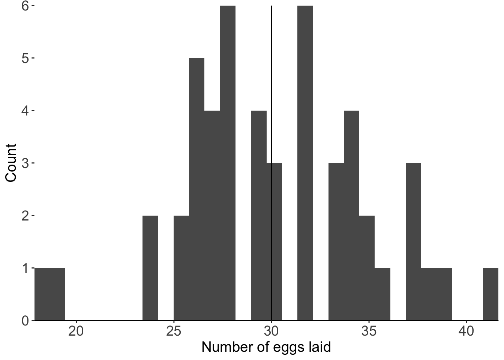
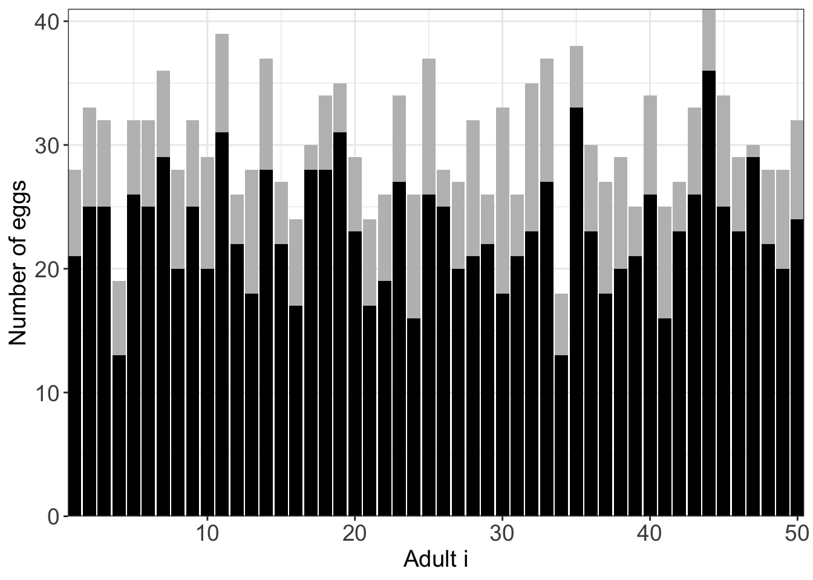

number_of_adults = 50 #50 adults
number_of_eggs <- rpois(number_of_adults, lambda = 30) #Random amount of eggs
full_eggs_df <- data.frame(adult_id = 1:50, number_of_eggs)Introduction
I am currently working on a group lab project where I have to include demographic stochasticity in the Hassell population growth model. I haven’t really worked with stochasticity, so a lot of my “work” is following Melbourne and Hastings 2008[1] , where in the supplementary material, they explain how stochasticity is incorporated. The first model, the Ricker Poisson model, only includes demographic stochasticty.
[1] Melbourne, Brett A., and Alan Hastings. “Extinction risk depends strongly on factors contributing to stochasticity.” Nature 454.7200 (2008): 100-103.
The number of eggs is a Poisson process
Like Melbourne and Hastings, we are modeling flour beetles. For an adult \(i\), we can express the number of eggs (\(B\)) laid in its lifetime at time \(t\) as:
\[ B_{i,t} \sim Poisson(\beta), \]
where \(\beta\) is the mean number of births.
What would this look like in code? We can use rpois to generate the number of eggs. On average, a flour beetle lays 30 eggs in its lifetime (\(\beta = 30\)). Let’s say there are 50 female adults that all lay eggs.
We can then visualize how much eggs each adult produced:

And we can visualize this as a distribution:
`stat_bin()` using `bins = 30`. Pick better value with `binwidth`.
Survival of the eggs
The number of eggs surviving to adulthood is also influenced by stochasticty. I am only assuming density-independent mortality which I call \(\mu\) . If we assume that 25% of the individuals die (so 75% survivorship), then we can express the surviving eggs in the form of the binomial probability distribution. Specifically, of the offspring of adult \(i\), how many of them are going to survive to produce their own eggs?
In the paper, they actually include egg cannibalism by adults
The binomial probability requires the number of trials (the offsprings) and the probability of survival. Basically, imagine that for each offspring, we are flipping a biased coin. The equation would then look like:
\[ S_{i,t+1} \sim Binomial(B_{i,t}, (1- \mu) ), \] where \(S\) is the surviving offsprings of adult \(i\).
We can code this by using a for-loop:
for (a in seq(1,50)){
full_eggs_df$survived[a] <- rbinom(n = 1, size = full_eggs_df$number_of_eggs[a], prob = 0.75)
}
###survival rate
full_eggs_df$surv_rate <-full_eggs_df$survived/full_eggs_df$number_of_eggs This plot shows that for each adult i who produced \(B\) amount of eggs (grey bar), what are the proportion that survived? (black bar)

Compound distribution
Interestingly, if we write the entire binomial distribution out:
\[ S_{i,t+1} \sim Binomial(Poisson(\beta), (1- \mu)), \] we can see this as a compound distribution or more specifically, a compound Binomial-Poisson distribution. We can reduce that gnarly equation. Let’s find the expected number of surviving offspring which we call \(\mathbb{E}[S]\). Let us also find the expected number of eggs laid which is \(\mathbb{E}[Poisson(\beta)]\). The mean of the Poisson distribution is just the parameter or \(\beta\). Therefore:
\[ \mathbb{E} [S_{i,t+1}] \sim Binomial(\beta, (1- \mu)), \]
The average number of successes or survival for a binomial distribution is simply \(np\) where \(n\) is the number of trials and \(p\) is the probability of success.
Therefore, \(\mathbb{E}[S] = \beta (1- \mu)\). This is saying the average number of eggs that will survive to lay the next generation is \(\beta (1 - \mu)\). Because this is the average, we can then use the Poisson distribution (Rember, the expectation of the Poisson distribution is its parameter). We can then say that
\[ S_{i,t+1} \sim Poisson(\beta(1- \mu)) \] The total number of adults in the next generation is then:
\[ N_{t+1} = \sum_{i=1}^{N_t} S_{i,t+1} \]
We can then make it simpler because of the rule that states:
Let \(X \sim Poisson(\lambda_1)\) and let \(Y \sim Poisson(\lambda_2)\), their sum is a Poisson distribution and \(X+Y \sim (\lambda_1 + \lambda_2)\)
That means that if we get the total average (or \(N_t (1- \mu)\)) we can simplify this to:
\[ N_{t+1} \sim Poisson (N_t (1- \mu)). \] TA-DA this is how they got it!